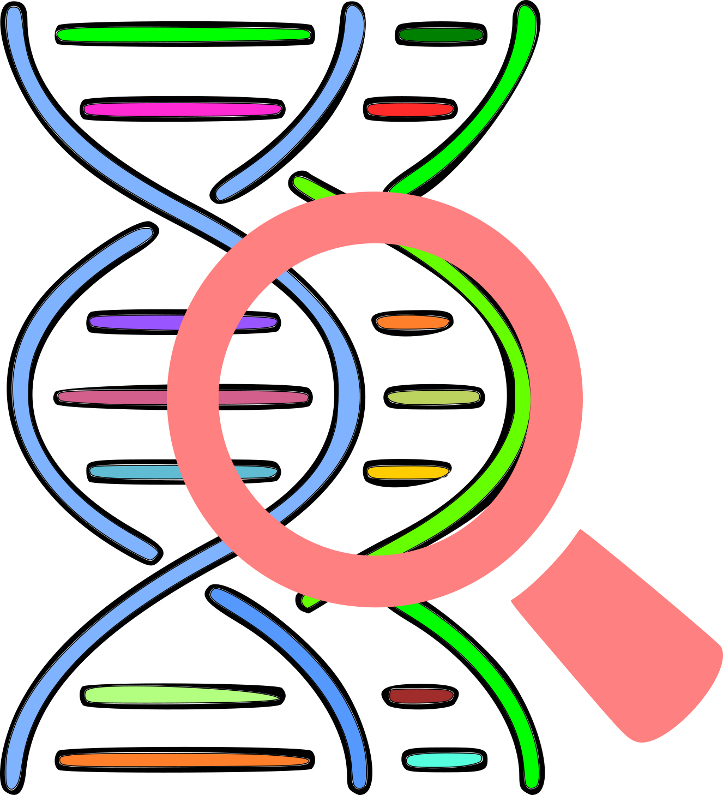

Comparative Genomic Analysis Visualization
Show All Relationships
Show Only Cross Relationships
Show Only Clicked Nodes Relationships
Reset
Zooming:
Dragging:
Created By KAUST Visualization Core Lab, March 2018